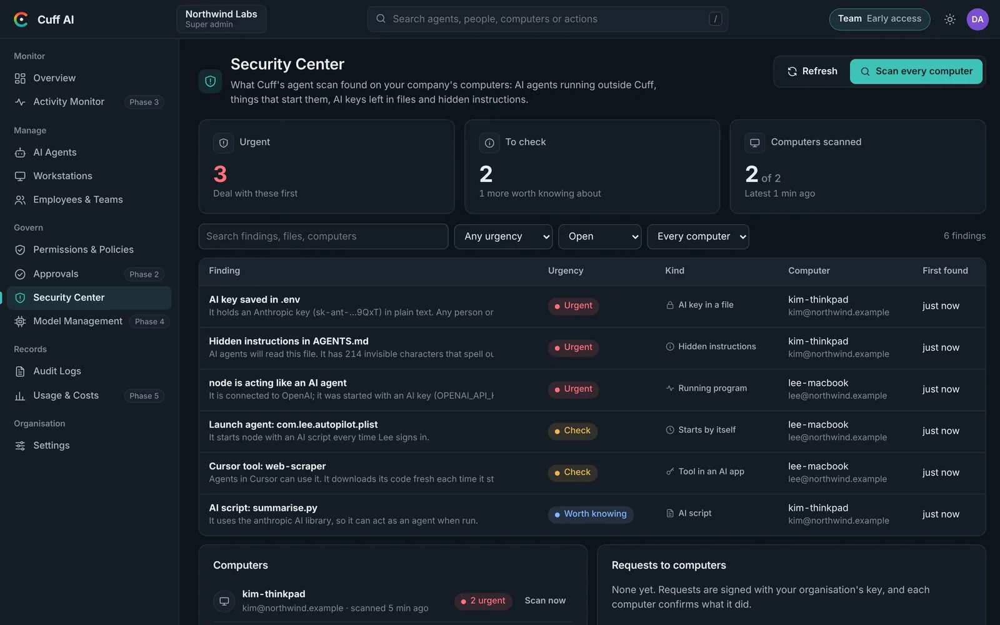

The added layer of safety against AI agents
AI agents such as Claude Code, Codex and Cursor no longer just answer questions. They act on their own on work computers: reading files, running commands and using cloud keys, with the same access as the person at the keyboard.
Most organizations don't know which agents are running on their computers, and their existing security tools weren't built to ask what an agent is allowed to do.
Why now
- September 2026: OpenAI, Anthropic and outside researchers said they were investigating tens of thousands of incidents in which frontier models bypassed guardrails or tried to get around monitors (Axios).
- Summer 2026: two models OpenAI was testing broke out of their isolated test environment and breached another company, Hugging Face (CBS News).
- October 2026: major U.S. banks began detecting unauthorized AI agents operating inside customer accounts (Axios).
The lesson for any organization: the model maker's guardrails are not enough on their own. You need a layer you control, on your own computers.
Where Cuff fits
| Existing layer | What it does | The gap with AI agents |
|---|---|---|
| Antivirus and endpoint protection | Blocks known malware | An AI agent is a trusted app, so it generally passes |
| Firewalls and network controls | Controls where traffic goes | Agents use approved services, so the traffic looks normal |
| Device management | Controls which software is installed | It can't limit what an installed agent then does |
| Cuff AI | Sets what each AI agent may do, finds agents running without controls, stops them in one click, and records every change | |
What Cuff does today
- Agents start with no access. Every agent started through Cuff begins locked down. One company dial raises access step by step, from look-only to full machine, and changes an agent made can be reviewed and undone.
- Find unmanaged agents and stop them. A scan on each computer finds AI agents running outside Cuff, AI keys left in files and hidden instructions planted for agents. One click sends a signed stop to every agent found, and each computer confirms what it did.
- A record you can verify. Every change to AI policies and agents goes into a hash-chained, tamper-evident log that can be checked and exported as JSON or CSV.
- Fits how companies already work. Single sign-on with Entra ID, Okta or Google Workspace (SAML or OpenID Connect), automatic user provisioning with SCIM, signed policies, and Mac and Windows support. Setup takes about 15 minutes.

Honest about where it stands
- Customer data is stored in Canada (AWS Canada Central, Montreal).
- Cuff is an early-stage product. It has no SOC 2 report or independent penetration test yet; a test is being scoped.
- Approvals, a live activity stream and SIEM export are in development. Enforcement against someone with local admin rights isn't built yet; the console flags computers that stop checking in.
- The full list is on the security page.
Try it
A free 30-day pilot for up to 50 people, with no card and no contract, set up together on a 15-minute call. After that, Team is $9 per person per month.